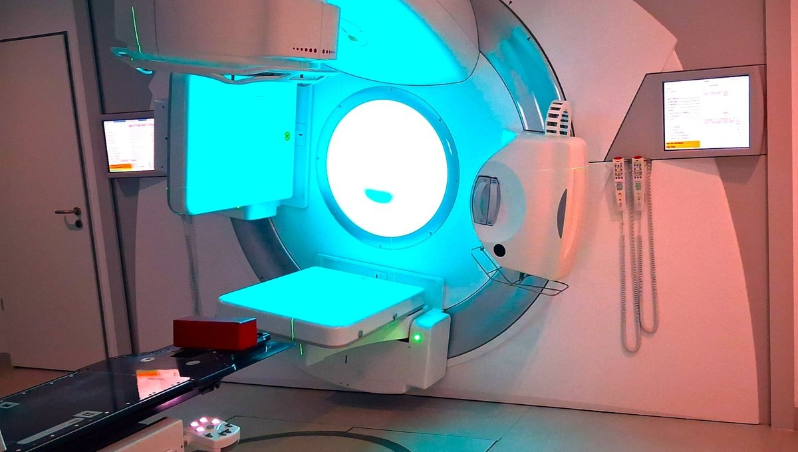
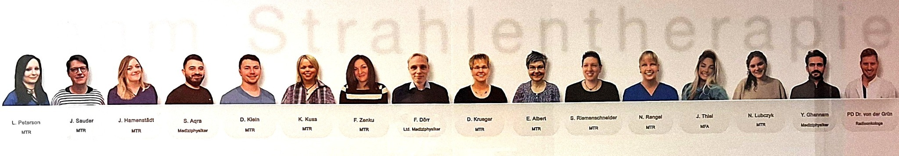
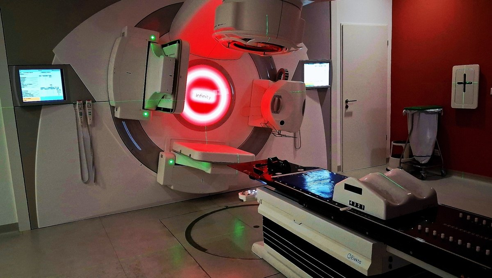

01
BLAU, GRÜN und ROT
Blues Rock · mit einem Augenzwinkern
Drei Lieder. Sechs Wochen. Eine bleibende Erinnerung.
Manches lässt sich nicht mit einem einfachen „Danke“ sagen.
Sechs Wochen lang durfte ich Ihre Arbeit, Ihre Aufmerksamkeit und Ihre Menschlichkeit erleben. Ich habe gesehen, wie viel Wissen, Erfahrung und Sorgfalt hinter jeder Behandlung stehen – und wie viel ein freundliches Wort, ein Lächeln oder eine kleine Portion Humor bewirken können.
Darum sind diese drei Lieder entstanden – für euch, mit Musik und von Herzen.
Ein herzliches Dankeschön an das gesamte Team.





Für Ihre fachliche Kompetenz, Ihre Geduld und die herzliche Begleitung auf meinem Weg möchte ich Ihnen von Herzen danken. Sie haben mir diese Zeit leichter gemacht und mir Zuversicht gegeben.
Mit herzlichen Grüßen und großer Dankbarkeit
Lothar